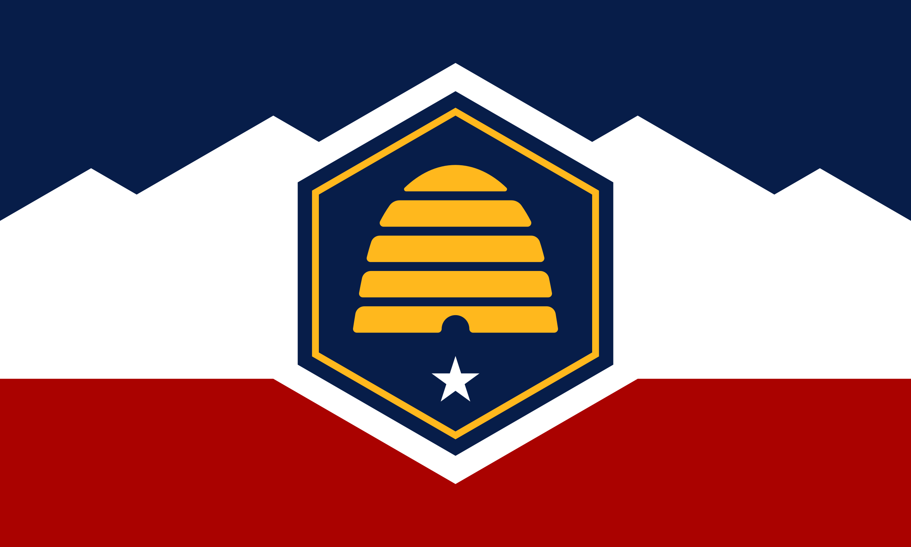
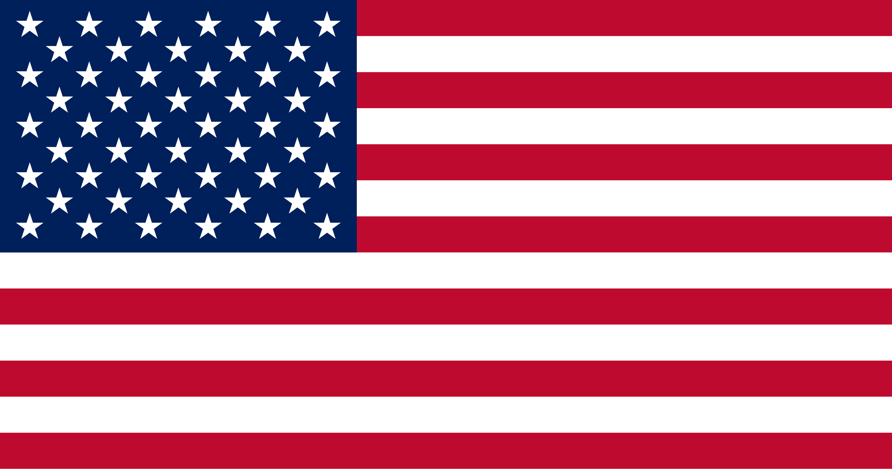

Asa Benson
About Me
My name is Asa. I was born in Northern Utah and currently am working towards making my first video games. My life is all over place and now I want to travel. I also like to learn about the world and like learning how to speak Japanese and sometimes other languages.
State of Utah, United States of America


The United States is amongst one of the biggest countries of the world, which spans much of Northern America similar to its neighbor Canada to the north, which is the second biggest country in the world. The United States is also transcontinental as the State of Hawaii is located in Oceania.
Amongst the the diversity of land and people is the State of Utah, which itself is diverse in enviroment, in large desert with vast mountains, rock formations and bodies of waters that are majestic to gaze upon.